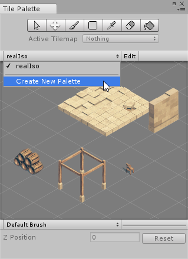
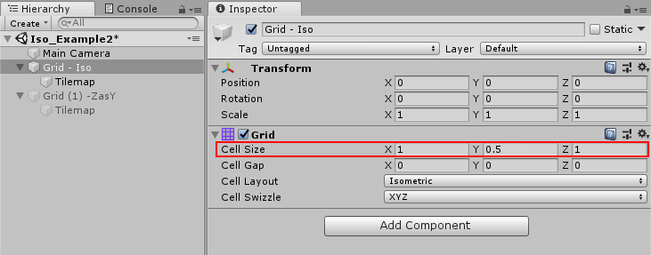
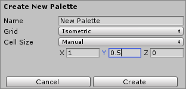
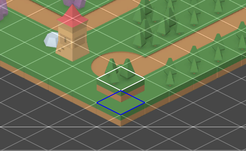

To create a Tile Palette for painting an Isometric Tilemap:
Open the Tile Palette window (menu: Window > 2D > Tile Palette):

Select the Create New Palette to open its drop-down menu.
Set the Grid type to the same layout as the Isometric or Isometric Z As Y Tilemap you are painting.
Set Cell Size is to Manual. Leave X and Z at their default values, but set Y to the same value as the Y value of the Tilemap’s Cell Size. This value depends on the projection type of the Tilemap. Refer to the Creating an Isometric Tilemap page for more details.

Select Create to finalize your settings and create the new Tile PaletteAsset.

To make any changes to the Tile Palette, double-click the Asset in the Asset Folder to open it as a Prefab and make your changes there.
Adjusting the Tile height in the Palette
When painting Tiles on an Isometric Z as Y Tilemap, define the Z position of the Grid you are painting on by setting the Z Position value. For this type of Tilemap, the Z position value translates into an offset along the Y-axis, and Tiles painted with different Z positions appear to have different heights on the Tilemap.
The Z Position editor is at the bottom of the Tilemap Palette:
Adjust the Z Position by entering the desired value (only whole numbers). Tiles are painted on a Grid with the set Z position until the value is changed or reset. To change the value back to the default of 0, select Reset .

In the Scene view, the brush preview displays both the Tile at the Cell’s original position with a Z value of 0 as a blue outline, and its painted position with the Z-as-Y offset applied is displayed with a white outline.
With the Tile brush selected, use the following shortcut keys to quickly switch to different Z positions.
Shortcut key:
Command:
-
Increase Z position by 1
=
Decrease Z position by 1
To remove Tiles, set the Erase Brush to the same Z position as the target Tile to be removed. The Erase Brush does not erase Tiles painted on at a different Z position to it.